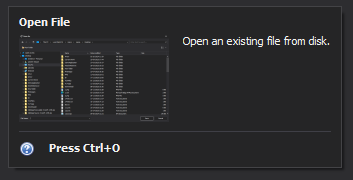

IRichToolTip
Represents a rich, structured tooltip that can display multiple types of content such as titles, text, images, and separators. Unlike standard tooltips, a rich tooltip allows you to compose visually organized and more informative content.
Overview
An IRichToolTip is composed of a collection of items exposed through its Items property. Each item represents a specific type of content, allowing you to build a tooltip in a structured and flexible way.
Use IRichToolTip when you need:
- Multiple sections within a tooltip
- Visual elements such as images or icons
- Clear separation and hierarchy of content
Items Collection
The Items collection provides methods to add different types of elements to the tooltip.
Title Item
Represents a header or emphasized text within the tooltip.
- Created using: Items.AddTitle(string text)
- Interface: IRichToolTipTitleItem
Usage:
- Main heading of the tooltip
- Section headers
- Footer highlights
Example:
IRichToolTipTitleItem title = toolTip.Items.AddTitle("Open File");
Content Item
Represents the main descriptive text of the tooltip. It can optionally include an image.
- Created using: Items.Add(string text)
- Interface: IRichToolTipItem
Properties:
- Text – The content text
- Image – Optional image displayed alongside the text
Example:
IRichToolTipItem content = toolTip.Items.Add("Open an existing file from disk.");
content.Image = Resources.OpenFile;
Separator Item
Represents a visual divider used to separate sections within the tooltip.
- Created using: Items.AddSeparator()
- Interface: IRichToolTipSeparatorItem
Usage:
- Improve readability
- Group related content
Example:
toolTip.Items.AddSeparator();
Example
IRichToolTip toolTip = factory.CreateToolTip();
// Title
toolTip.Items.AddTitle("Open File");
// Content with image
var content = toolTip.Items.Add("Open an existing file from disk.");
content.Image = Resources.OpenFile;
// Separator
toolTip.Items.AddSeparator();
// Footer
var footer = toolTip.Items.AddTitle("Press Ctrl+O");
footer.Image = Resources.HelpIcon;
Output of Example

Item Order
Items are displayed in the order they are added. This allows you to control the layout and grouping of content.
When to Use IRichToolTip
Use IRichToolTip instead of standard tooltips when:
- You need structured or multi-line content
- You want to include images or icons
- You need better visual hierarchy (headers, sections)
Summary
Summary IRichToolTip provides a flexible way to create visually rich and structured tooltips by combining multiple item types:
- IRichToolTipTitleItem for headings
- IRichToolTipItem for descriptive content
- IRichToolTipSeparatorItem for layout organization
This makes it ideal for delivering enhanced contextual information in a clean and user-friendly format.